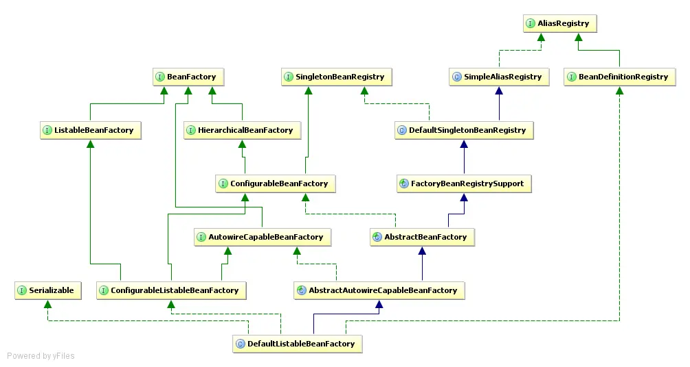

Spring源码记录
一、BeanFactory和ApplicationContext
Spring框架最核心的功能为IOC，我们一般称BeanFactory为Spring的IOC容器，而ApplicationContext是BeanFactory的子接口，他组合了BeanFactory拥有其全部功能，并且扩展了更多面向实际应用的、企业级的高级特性。例如下图中可以看出除了BeanFactory之外ApplicationContext还继承了其他接口。

思绪记录：
控制反转(Inversion of control)即由Spring帮我们实例化需要的对象。那么我们需要给Spring提供这些对象元数据这样Spring才能在我们需要的时候为我们实例化对象——即我们通过XML或者注解配置bean，在需要使用的地方通过注解Autowired或Resource。这其中读取对象元数据到实例化对象这个过程就是由Spring IOC提供的。
最核心的IOC容器为DefaultListableBeanFactory，他是BeanFactory接口最重要的一个实现类，提供了IOC容器最基础的功能。
Spring中使用BeanDefinition来保存对象的元数据，将通过BeanDefinition实例化生成的对象叫做Bean。而实例化Bean是DefaultListableBeanFactory完成的，ApplicationContext的实现类都包含一个DefaultListableBeanFactory的成员变量，通过调用它的方法来实现IOC容器的基础功能。
二、DefaultListableBeanFactory
接口ConfigurableListableBeanFactory 和BeanDefinitionRegistry的默认实现。基于 bean 定义元数据的成熟 bean 工厂，可通过后处理器扩展。其类图如下所示：

思绪记录：
看Spring中核心程序的类图可以发现，都直接或间接的继承和实现了很多类和接口。这其实就是Spring源码做的很好的地方——接口应该具备单一职责。相比于Spring源码里面的API和设计模式，很多人都会忽略这些最基础的内容。所以说要研究一个核心类，最好先了解其实现的接口的作用。
2.1 BeanDefinitionRegistry
BeanDefinitionRegistry接口类定义如下，它继承了接口AliasRegistry，所以它同样具有AliasRegistry的功能。
public interface BeanDefinitionRegistry extends AliasRegistry {
......
}
AliasRegistry接口源码如下，该接口的作用管理Bean的别名。它的实现类为SimpleAliasRegistry，Spring对Bean别名的操作都是通过SimpleAliasRegistry操作的。
public interface AliasRegistry {
void registerAlias(String name, String alias);
void removeAlias(String alias);
boolean isAlias(String name);
String[] getAliases(String name);
}
BeanDefinitionRegistry接口源码如下，该接口主要作用是管理Bean的定义信息（BeanDefinition）。它的实现类就是DefaultListableBeanFactory。Spring中对BeanDefinition的操作都是通过DefaultListableBeanFactory。例如上文说过的ApplicationContext各种实现类。
public interface BeanDefinitionRegistry extends AliasRegistry {
//将bean定义信息注册到IOC容器
void registerBeanDefinition(String beanName, BeanDefinition beanDefinition)
throws BeanDefinitionStoreException;
//删除bean的定义信息
void removeBeanDefinition(String beanName) throws NoSuchBeanDefinitionException;
//获取bean的定义信息
BeanDefinition getBeanDefinition(String beanName) throws NoSuchBeanDefinitionException;
boolean containsBeanDefinition(String beanName);
String[] getBeanDefinitionNames();
int getBeanDefinitionCount();
default boolean isBeanDefinitionOverridable(String beanName) {
return true;
}
boolean isBeanNameInUse(String beanName);
}
看过这两个接口的源码之后，就清楚了BeanDefinitionRegistry接口的作用：管理Bean的别名和定义信息。
2.2 ConfigurableListableBeanFactory
查看上文类图，发现其继承的接口很多，其父接口说明如下。
2.2.1 BeanFactory
BeanFactory是访问Spring容器最核心的接口。他最主要的作用为获取容器中的Bean。
public interface BeanFactory {
String FACTORY_BEAN_PREFIX = "&";
Object getBean(String name) throws BeansException;
<T> T getBean(String name, Class<T> requiredType) throws BeansException;
Object getBean(String name, Object... args) throws BeansException;
<T> T getBean(Class<T> requiredType) throws BeansException;
<T> T getBean(Class<T> requiredType, Object... args) throws BeansException;
<T> ObjectProvider<T> getBeanProvider(Class<T> requiredType);
<T> ObjectProvider<T> getBeanProvider(ResolvableType requiredType);
boolean containsBean(String name);
boolean isSingleton(String name) throws NoSuchBeanDefinitionException;
boolean isPrototype(String name) throws NoSuchBeanDefinitionException;
boolean isTypeMatch(String name, ResolvableType typeToMatch) throws NoSuchBeanDefinitionException;
boolean isTypeMatch(String name, Class<?> typeToMatch) throws NoSuchBeanDefinitionException;
@Nullable
Class<?> getType(String name) throws NoSuchBeanDefinitionException;
@Nullable
Class<?> getType(String name, boolean allowFactoryBeanInit) throws NoSuchBeanDefinitionException;
String[] getAliases(String name);
}
2.2.2 SingletonBeanRegistry
该接口用于将已经完全实例化的单例的Bean注册到IOC容器中，它的实现类是DefaultSingletonBeanRegistry。
public interface SingletonBeanRegistry {
void registerSingleton(String beanName, Object singletonObject);
@Nullable
Object getSingleton(String beanName);
boolean containsSingleton(String beanName);
String[] getSingletonNames();
int getSingletonCount();
Object getSingletonMutex();
}
注意与上文BeanDefinitionRegistry做好区分，区别如下所示：
| 接口 | 实现类 | 作用 |
|---|---|---|
| SingletonBeanRegistry | DefaultSingletonBeanRegistry | 将已经完全实例化的单例的Bean注册到IOC容器中 |
| BeanDefinitionRegistry | DefaultListableBeanFactory | 将bean定义信息注册到IOC容器中 |
思绪记录
文章中记录的IOC容器是一个抽象的概念，它是Spirng中保存所有bean信息的集合，我们将这些集合统称为IOC容器或者Spring容器。 实际上DefaultSingletonBeanRegistry和DefaultListableBeanFactory都有一个类型为ConcurrentHashMap的成员变量，分别为
Map<String, BeanDefinition> beanDefinitionMap和Map<String, Object> singletonObjects。beanDefinitionMap用于保存bean的定义信息，singletonObjects用于保存已经实例化的bean。
2.2.3 ListableBeanFactory
该接口继承了BeanFactory，在其功能的基础上，新增枚举bean实例的功能。
NOTE: With the exception of getBeanDefinitionCount and containsBeanDefinition, the methods in this interface are not designed for frequent invocation. Implementations may be slow.
需要注意的是，该接口中除了getBeanDefinitionCount 和 containsBeanDefinition，其他方法不适合频繁调用。执行会比较慢。
public interface ListableBeanFactory extends BeanFactory {
boolean containsBeanDefinition(String beanName);
int getBeanDefinitionCount();
String[] getBeanDefinitionNames();
<T> ObjectProvider<T> getBeanProvider(Class<T> requiredType, boolean allowEagerInit);
<T> ObjectProvider<T> getBeanProvider(ResolvableType requiredType, boolean allowEagerInit);
String[] getBeanNamesForType(ResolvableType type);
String[] getBeanNamesForType(ResolvableType type, boolean includeNonSingletons, boolean allowEagerInit);
String[] getBeanNamesForType(@Nullable Class<?> type);
String[] getBeanNamesForType(@Nullable Class<?> type, boolean includeNonSingletons, boolean allowEagerInit);
<T> Map<String, T> getBeansOfType(@Nullable Class<T> type) throws BeansException;
<T> Map<String, T> getBeansOfType(@Nullable Class<T> type, boolean includeNonSingletons, boolean allowEagerInit)
throws BeansException;
String[] getBeanNamesForAnnotation(Class<? extends Annotation> annotationType);
Map<String, Object> getBeansWithAnnotation(Class<? extends Annotation> annotationType) throws BeansException;
@Nullable
<A extends Annotation> A findAnnotationOnBean(String beanName, Class<A> annotationType)
throws NoSuchBeanDefinitionException;
@Nullable
<A extends Annotation> A findAnnotationOnBean(
String beanName, Class<A> annotationType, boolean allowFactoryBeanInit)
throws NoSuchBeanDefinitionException;
<A extends Annotation> Set<A> findAllAnnotationsOnBean(
String beanName, Class<A> annotationType, boolean allowFactoryBeanInit)
throws NoSuchBeanDefinitionException;
}
2.2.4 HierarchicalBeanFactory
HierarchicalBeanFactory 在BeanFactory基础上，新增提供父子容器的层次关系查找能力。
至于父容器的设置，需要通过ConfigurableBeanFactory#setParentBeanFactory
至于为啥要将设置和查询拆开，看不太明白。
其源码如下：
public interface HierarchicalBeanFactory extends BeanFactory {
@Nullable
BeanFactory getParentBeanFactory();
boolean containsLocalBean(String name);
}
2.2.5 ConfigurableBeanFactory
ConfigurableBeanFactory接口定义如下：
public interface ConfigurableBeanFactory extends HierarchicalBeanFactory, SingletonBeanRegistry {
......
}
该接口继承了HierarchicalBeanFactory和SingletonBeanRegistry。所以其具备查询bean实例（来自BeanFactory）、查询父容器（来自HierarchicalBeanFactory）和注册已实例化的bean到容器（来自SingletonBeanRegistry）的能力，ConfigurableBeanFactory接口在此之外新提供了很多配置 bean 工厂的工具。
ConfigurableBeanFactory接口不适合在正常应用程序代码中使用——应使用 BeanFactory 或 org.springframework.beans.factory.ListableBeanFactory 。 这个扩展接口只是为了允许框架内部即插即用以及对 bean 工厂配置方法的特殊访问。
ConfigurableBeanFactory接口源码较多不便在文章中展示，其接口文档地址如下：ConfigurableBeanFactory
2.2.6 AutowireCapableBeanFactory
该接口在BeanFactory的基础上新提供了自动装配功能，可以将IOC容器中已经实例化的bean，注入到不在IOC容器中的普通对象。该接口是实现类为AbstractAutowireCapableBeanFactory，主要用于与第三方框架整合。
public interface AutowireCapableBeanFactory extends BeanFactory {
int AUTOWIRE_NO = 0;
int AUTOWIRE_BY_NAME = 1;
int AUTOWIRE_BY_TYPE = 2;
int AUTOWIRE_CONSTRUCTOR = 3;
@Deprecated
int AUTOWIRE_AUTODETECT = 4;
String ORIGINAL_INSTANCE_SUFFIX = ".ORIGINAL";
//实例化bean,过程中会自动注入需要的属性。
<T> T createBean(Class<T> beanClass) throws BeansException;
//自动注入bean中属性，如果IOC容器中存在
void autowireBean(Object existingBean) throws BeansException;
Object configureBean(Object existingBean, String beanName) throws BeansException;
Object autowire(Class<?> beanClass, int autowireMode, boolean dependencyCheck) throws BeansException;
void autowireBeanProperties(Object existingBean, int autowireMode, boolean dependencyCheck)
throws BeansException;
void applyBeanPropertyValues(Object existingBean, String beanName) throws BeansException;
Object initializeBean(Object existingBean, String beanName) throws BeansException;
void destroyBean(Object existingBean);
<T> NamedBeanHolder<T> resolveNamedBean(Class<T> requiredType) throws BeansException;
Object resolveBeanByName(String name, DependencyDescriptor descriptor) throws BeansException;
@Nullable
Object resolveDependency(DependencyDescriptor descriptor, @Nullable String requestingBeanName) throws BeansException;
@Nullable
Object resolveDependency(DependencyDescriptor descriptor, @Nullable String requestingBeanName,
@Nullable Set<String> autowiredBeanNames, @Nullable TypeConverter typeConverter) throws BeansException;
}
2.3 AbstractAutowireCapableBeanFactory
通过上文可知DefaultListableBeanFactory继承了AbstractAutowireCapableBeanFactory类，该类实现了接口AutowireCapableBeanFactory，提供自动装配能力。同时集成了AbstractBeanFactory类。
2.3.1 SimpleAliasRegistry
该类上文已经提到过，实现了接口AliasRegistry，用于管理bean的别名。
SimpleAliasRegistry类部分源码如下，通过ConcurrentHashMap来保存别名和bean名称的映射关系。
public class SimpleAliasRegistry implements AliasRegistry {
private final Map<String, String> aliasMap = new ConcurrentHashMap<>(16);
@Override
public void registerAlias(String name, String alias) {
...
}
@Override
public String[] getAliases(String name) {
List<String> result = new ArrayList<>();
synchronized (this.aliasMap) {
retrieveAliases(name, result);
}
return StringUtils.toStringArray(result);
}
...
}
2.3.2 DefaultSingletonBeanRegistry
上文2.2.2节有说明该类，是接口SingletonBeanRegistry真正的实现类。
类说明，该类注册bean是使用三级缓存，用于解决循环依赖问题
2.3.3 FactoryBeanRegistrySupport
FactoryBeanRegistrySupport主要是在DefaultSingletonBeanRegistry基础上增加了对FactoryBean的特殊处理功能。
因此FactoryBeanRegistrySupport我们称其问单例bean的注册中心，负责管理所有的单例bean。
2.3.4 AbstractBeanFactory
作为顶层抽象实现，AbstractBeanFactory 实现了 BeanFactory 、HierarchicalBeanFactory、 ConfigurableBeanFactory 定义的大多数方法，同时将核心方法抽象出来交由子类拓展与实现。
AbstractBeanFactory 定义了三个核心的 抽象方法，交由子类实现，具体的实现类即为AbstractAutowireCapableBeanFactory.
public abstract class AbstractBeanFactory extends FactoryBeanRegistrySupport implements ConfigurableBeanFactory {
protected abstract boolean containsBeanDefinition(String beanName);
protected abstract BeanDefinition getBeanDefinition(String beanName) throws BeansException;
protected abstract Object createBean(String beanName, RootBeanDefinition mbd, @Nullable Object[] args) throws BeanCreationException;
//省略其他属性及方法......
}
2.4 使用示例
本示例最好将代码在本地debug，对比文章进行阅读。
首先提前准备三个Bean，如下
@Configuration
class Config {
@Bean
public Bean1 bean1() {
return new Bean1();
}
}
class Bean1 {
String name;
@Autowired
Bean2 bean2;
}
class Bean2 {
String name;
}
2.4.1 新建IOC容器
后续代码都基于下面该类。
import org.springframework.beans.factory.annotation.Autowired;
import org.springframework.beans.factory.config.ConfigurableBeanFactory;
import org.springframework.beans.factory.support.*;
import org.springframework.context.annotation.*;
public class DefaultListableBeanFactoryDemo {
public static void main(String[] args) {
defaultListableBeanFactory();
}
private static void defaultListableBeanFactory() {
//1.创建一个IOC容器，此时容器中什么都没有
DefaultListableBeanFactory beanFactory = new DefaultListableBeanFactory();
//2.将注解配置的bean生成beanDefinition
AbstractBeanDefinition configBeanDefinition =
BeanDefinitionBuilder.genericBeanDefinition(Config.class)
.setScope(ConfigurableBeanFactory.SCOPE_SINGLETON)
.getBeanDefinition();
//3.将beanDefinition注册到IOC容器
beanFactory.registerBeanDefinition("config", configBeanDefinition);
//输出结果为：config
println(beanFactory, 1);
}
/**
* 输出beanFactory中所有bean的名称
*
* @param beanFactory bean工厂
*/
private static void println(DefaultListableBeanFactory beanFactory, int number) {
System.out.println("=============" + number + "=============");
for (String beanDefinitionName : beanFactory.getBeanDefinitionNames()) {
System.out.println(beanDefinitionName);
}
}
}
通过本例可以发现Config的Bean定义信息已经注册到了IOC容器中，但是Config中的定义的Bean1没有注册到IOC容器中。
因此，提出两个问题：
- 问题一：
@Configuration、@bean注解为什么没有生效？ - 问题二：什么时候解析
@Configuration、@bean生成BeanDefinition？
2.4.2 新增后置工厂处理器
在上例基础上新增步骤4、5
//4.添加ConfigurationClassPostProcessor的beanDefinition到IOC容器
AbstractBeanDefinition ConfigurationClassPostProcessorBeanDefinition =
BeanDefinitionBuilder.genericBeanDefinition(ConfigurationClassPostProcessor.class)
.setScope(ConfigurableBeanFactory.SCOPE_SINGLETON)
.getBeanDefinition();
beanFactory.registerBeanDefinition(
"configurationClassPostProcessor", ConfigurationClassPostProcessorBeanDefinition);
//5.执行后置工厂处理器，解析@Configuration配置类
beanFactory.getBean(ConfigurationClassPostProcessor.class).postProcessBeanDefinitionRegistry(beanFactory);
println(beanFactory, 2);
再次执行，可以发现IOC容器中除了我们手动新增的两个beanDefinition，还多了Bea1。
=============1=============
config
=============2=============
config
configurationClassPostProcessor
getBean1
- 问题解答:
1:Spring中通过后置工厂处理器ConfigurationClassPostProcessor来负责解析@Configuration配置类。
2:执行ConfigurationClassPostProcessor#postProcessBeanDefinitionRegistry方法可以解析IOC
容器中的所有的@Configuration配置类，并解析配置类中所有@Bean生成BeanDefinition注册到IOC容器中。
3:ConfigurationClassPostProcessor解析如下注解：
@Configuration
@Bean @Import
@ImportResource
@ComponentScan、
@ComponentScans
因此配置类中如下注解标注的BeanDefinition都会被注册到IOC容器中。
- ConfigurationClassPostProcessor部分关键源码如下
public void processConfigBeanDefinitions(BeanDefinitionRegistry registry) {
List<BeanDefinitionHolder> configCandidates = new ArrayList<>();
String[] candidateNames = registry.getBeanDefinitionNames();
//筛选所有@Configuration配置类
for (String beanName : candidateNames) {
BeanDefinition beanDef = registry.getBeanDefinition(beanName);
if (ConfigurationClassUtils.checkConfigurationClassCandidate(beanDef, this.metadataReaderFactory)) {
configCandidates.add(new BeanDefinitionHolder(beanDef, beanName));
}
}
// Parse each @Configuration class
ConfigurationClassParser parser = new ConfigurationClassParser(
this.metadataReaderFactory, this.problemReporter, this.environment,
this.resourceLoader, this.componentScanBeanNameGenerator, registry);
Set<BeanDefinitionHolder> candidates = new LinkedHashSet<>(configCandidates);
Set<ConfigurationClass> alreadyParsed = new HashSet<>(configCandidates.size());
do {
StartupStep processConfig = this.applicationStartup.start("spring.context.config-classes.parse");
//解析@Configuration配置类
parser.parse(candidates);
parser.validate();
Set<ConfigurationClass> configClasses = new LinkedHashSet<>(parser.getConfigurationClasses());
configClasses.removeAll(alreadyParsed);
// Read the model and create bean definitions based on its content
if (this.reader == null) {
this.reader = new ConfigurationClassBeanDefinitionReader(
registry, this.sourceExtractor, this.resourceLoader, this.environment,
this.importBeanNameGenerator, parser.getImportRegistry());
}
//将所有解析的BeanDefinition注册到IOC容器中
this.reader.loadBeanDefinitions(configClasses);
}
while (!candidates.isEmpty());
}
2.4.3 新增Bean后置处理器
本例Bean1中通过@Autowired注解自动注入bean2，Autowired注解默认required的属性值为true，因此当解析该注解时，就会报没有Bean2的错误。